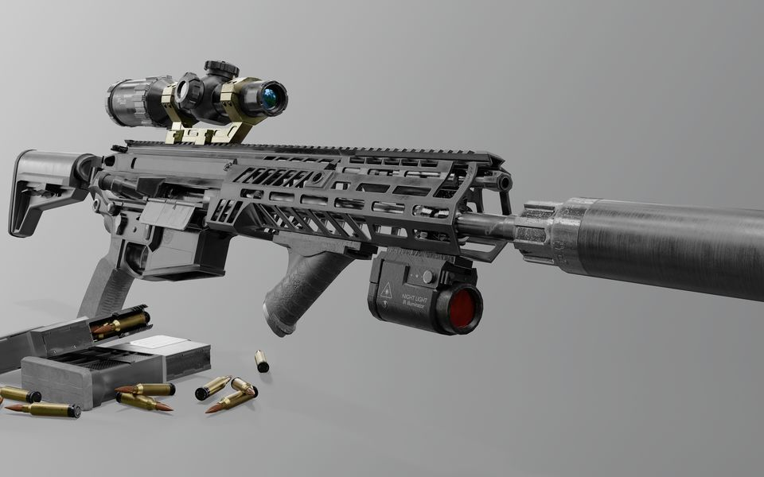
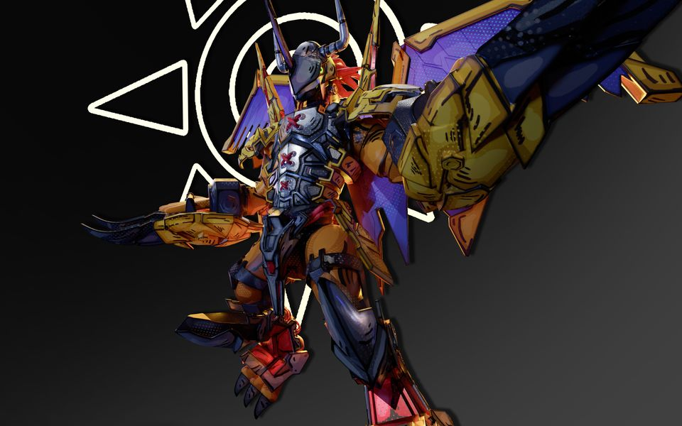
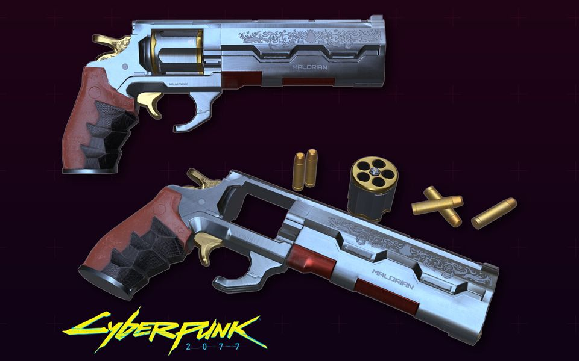
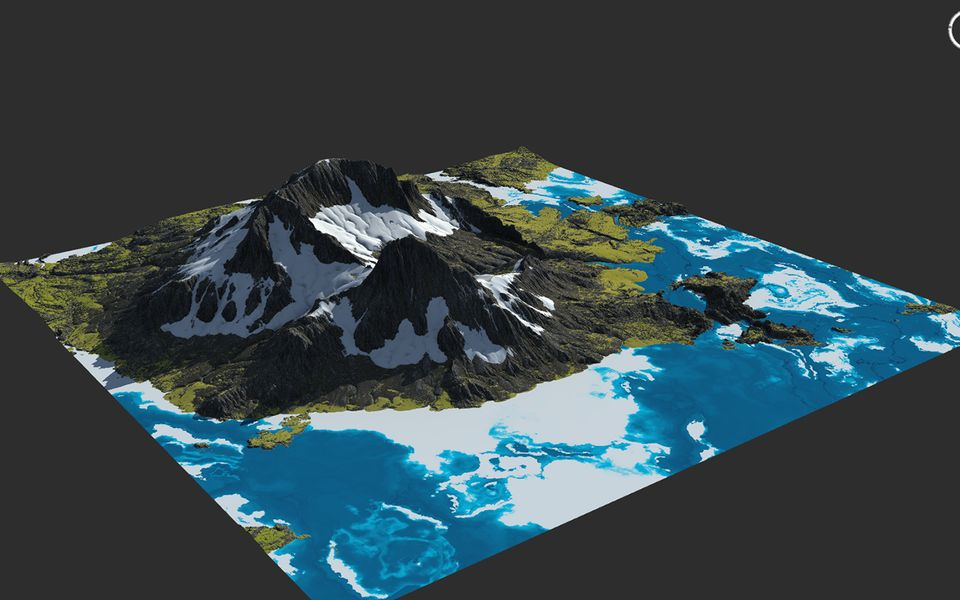

Game Art · Hard-surface prop
SIG MCX-Spear (EFT fan art)
A SIG MCX-Spear rifle, rebuilt from every reference I could find on Google, YouTube and in Escape from Tarkov.
Game-ready props and fan art: weapons, a camera, a creature, a city bus and terrain studies.

Game Art · Hard-surface prop
A SIG MCX-Spear rifle, rebuilt from every reference I could find on Google, YouTube and in Escape from Tarkov.

Game Art · Character model
A Digimon character modelled, unwrapped and textured as a game-ready asset.

Game Art · Prop
A Leica camera with a Pokémon twist, modelled and textured for real-time rendering.

Game Art · Stylized weapon
A stylized polearm inspired by Genshin Impact, from wireframe and UVs to final textures.

Game Art · Hard-surface prop
A revolver inspired by Cyberpunk 2077, with beauty shots, wireframe, UVs and texture maps.


Environment · Terrain
Terrain studies: mountains, coastlines and islands built with the eye of a geographer.